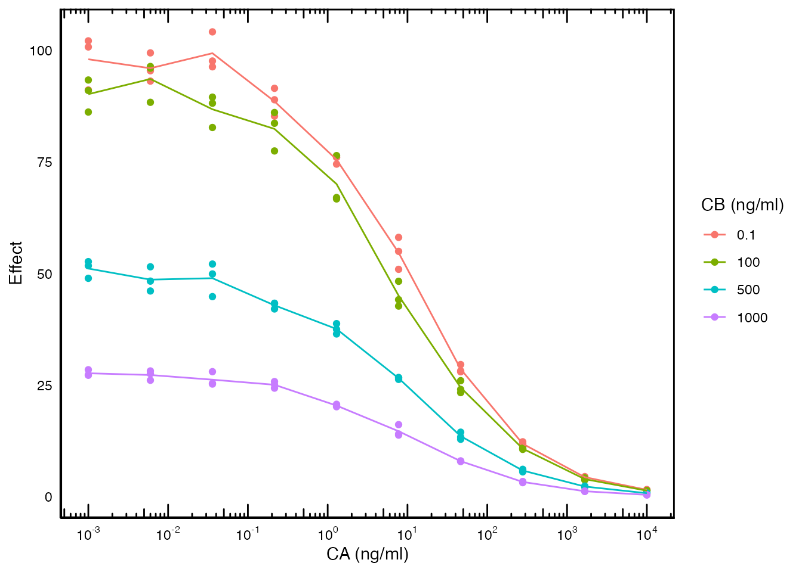

Introduction
This tutorial requires ubiquity 2.04 or greater. Currently this is only available using the development version off of github
Sometimes we need to analyze data where the independent variable is not time. You can do this with ubiquity and this tutorial will highlight how that is done. If you have not done so already, please review the naive-pooled parameter estimation tutorial because this will build on the concepts covered there. The workshop (workshop.ubiquity.tools) provides an example of how to analyize static in vitro data. To make a copy of these scripts and other supporting files in the current working directory run the following:
library(ubiquity)
fr = workshop_fetch(section="In Vitro", overwrite=TRUE)This should create the following files in your current working direcotry:
-
system-in_vitro.txt- System file that can be run both in vivo and in vitro -
in_vitro_er_data.csv- In vitro data file -
mk_data_in_vitro.R- Script to generate in vitro data -
analysis_in_vitro.R- Script to perform parameter estimation using the in vitro data
This example uses a system from Chakraborty and Jusko. J Pharm Sci 91(5), 1334-1342. Specifically equation 5 from that article where the effect of two drugs, A and B, is driven by their concentrations (C_A, and C_B):
E = 100 \left( 1- \frac{ \frac{I_{max,A}(C_A) ^{\gamma_A}}{(\Psi IC_{50,A})^{\gamma_A}} + \frac{I_{max,B}(\xi C_B)^{\gamma_B}}{(\Psi IC_{50,B})^{\gamma_B}} \\ + (I_{max,A} + I_{max,B} + I_{max,A} I_{max,B}) \\ \times \frac{(C_A) ^{\gamma_A}}{(\Psi IC_{50,A})^{\gamma_A}} \times \frac{(\xi C_B)^{\gamma_B}}{(\Psi IC_{50,B})^{\gamma_B}} \\ }{ \frac{(C_A) ^{\gamma_A}}{(\Psi IC_{50,A})^{\gamma_A}} + \frac{(\xi C_B)^{\gamma_B}}{(\Psi IC_{50,B})^{\gamma_B}} \\ +\frac{(C_A) ^{\gamma_A}}{(\Psi IC_{50,A})^{\gamma_A}} \times \frac{(\xi C_B)^{\gamma_B}}{(\Psi IC_{50,B})^{\gamma_B}} +1 } \right)
\xi = \frac{IC_{50,A}}{IC_{50,B}}
This has been implemented in the PKPD system file
(system-in_vitro.txt) shown at the bottom. This
implementation is dynamic meaning the effect changes with the PK of the
drug. However the effect is considered instantaneous and typically
analyzed from in vitro data using algebraic relationships. For
this system consider the following data:

Here both the concentrations of drug A and B are altered (independent variable) and the Effect is measured (dependent variable).
The sysem file: system-in_vitro.txt
First lets discuss the way the system file is structured. There is bolus dosing for the PK specified, but the initial conditions of the effect compartments are also defined in terms of system parameters:
<I> Cp_A = C_A0
<I> Cp_B = C_B0These system parameters (C_A0 and C_B0)
have a default value of zero. So by default the system would run like
any in vivo PKPD system. But these initial condition
placeholders will be used when performing in vitro analyses.
This allows you to use the same system file for both in vitro
and in vivo analyses. This is useful because you do not have to
do your static in vitro analysis in one system file and then copy and
paste to your in vivo dynamic system.
The dataset: in_vitro_er_data.csv
This table contains a snapshot of the relevant columns of the dataset:
C_A0 |
C_B0 |
Effect |
treat |
samp_time |
|---|---|---|---|---|
0.001 |
0.1 |
102.15401 |
A_0_001_B_0_1 |
1 |
0.001 |
0.1 |
100.78589 |
A_0_001_B_0_1 |
1 |
0.001 |
0.1 |
91.14621 |
A_0_001_B_0_1 |
1 |
0.001 |
100 |
93.38012 |
A_0_001_B_100 |
1 |
0.001 |
100 |
91.03467 |
A_0_001_B_100 |
1 |
0.001 |
100 |
86.20118 |
A_0_001_B_100 |
1 |
0.001 |
500 |
51.76744 |
A_0_001_B_500 |
1 |
0.001 |
500 |
48.95016 |
A_0_001_B_500 |
1 |
0.001 |
500 |
52.68611 |
A_0_001_B_500 |
1 |
0.001 |
1000 |
28.46122 |
A_0_001_B_1000 |
1 |
The C_A0 and C_B0 columns correspond to the
concentrations that elicit the Effect. The
treat column is a unique name for the combination of the
two drug concentrations. It has only letters numbers and underscores.
This is intentional so I can use this as a cohort name when I’m
constructing the estimation script below. The samp_time
column is set to 1. This is arbitrary because the mapping in the cohort
definitions requires a time column. You’ll see why it is arbitrary
below.
The analysis script: analysis_in_vitro.R
This analysis scripts has some aspects that are unique to the in vitro analysis being performed.
Output times
First is the output times. When you run simulations (which is what happens when performing a parameter estimation) more output times results in slower simulations. So it is important to only include the ncesssary output times. In this case we only have two output times (0 and 1):
cfg=system_set_option(cfg, group = "simulation",
option = "output_times",
seq(0,1,1))The final value of 1 was chosen because that corresponds to the time
column (samp_time) in the analysis dataset.
Making a dynamic simulation static:
Next we set the simulation option dynamic
to FALSE:
cfg=system_set_option(cfg, group = "simulation",
option = "dynamic",
value = FALSE)This will fix the values of the differential equations to 0 for the purposes of the subsequent simulations. Only available in ubiquity version \ge 2.04.
Datasets
For the dataset we are reading it into a dataframe and loading it that way. This was done so the dataset could be used internally with ubiqiuty and also to construct the analysis below:
er_data = readr::read_csv("in_vitro_er_data.csv")
cfg = system_load_data(cfg, dsname = "er_data",
data_file = er_data)Defining cohorts
In the estimation tutorial cohorts are defined individually. We could
do that here too but it would be rather tedious. See we need a cohort
for every unique combination of C_A0 and C_B0
in the dataset. To do this we are going to loop through each unique
value in the treat column and create a cohort. The variable
tmp_treat contains the value of the current treatment so
the first thing we do is get the records for the current treatment:
treat_recs = dplyr::filter(er_data, treat == tmp_treat)This subset of the data is used to define the initial condition
parameters for the current cohort using the cp field (see
the help for system_define_cohort() for more information
about this option). Because of the way the treat column was
constructed we can use this as the cohort name. This will allow us to
link the simulated output below to the original dataset in the post
processing section below. The inputs are set to NULL here
and we do not have to change them because there is no dosing.
cohort = list(
name = tmp_treat,
cf = list(
treat = c(tmp_treat)),
cp = list(
C_A0 = treat_recs$C_A0[1],
C_B0 = treat_recs$C_B0[1]),
inputs = NULL,
outputs = NULL,
dataset = "er_data")Because we set the simulation option dynamic to
FALSE, the initial condition is set to the values for the
current treatment, and there are no inputs, then the system is
effectively behaving like an in vitro system.
Postprocessing
You cannot rely on the normal figure generation and reporting
elements. In this example we can take the simulated output at the
estimation erp and the original data dataset
er_data to create meaningful diagnostic plots. This is
because we can link the two datasets using the treat column
from the original dataset to the COHORT column in
erp$pred:
df_orig = er_data |>
dplyr::select(C_A0, C_B0, ave_eff, treat) |>
dplyr::distinct()
df_est = erp$pred |>
dplyr::filter(!SMOOTH) |>
dplyr::rename(treat = COHORT)
df_plot = dplyr::full_join(df_est, df_orig, by="treat") |>
dplyr::mutate(C_B0 = as.factor(C_B0))
library(ggplot2)
p = ggplot(data=df_plot) +
geom_point(aes(x=C_A0, y=OBS, group=C_B0, color=C_B0)) +
geom_line(aes(x=C_A0, y=PRED, group=C_B0, color=C_B0)) +
scale_x_log10()Contents of system-in_vitro.txt
# Author: John Harrold <john.m.harrold@gmail.com>
#
# Analysis of an in vitro system. The system below was taken from:
#
# Chakraborty A, Jusko WJ. Pharmacodynamic interaction of recombinant human
# interleukin-10 and prednisolone using in vitro whole blood lymphocyte
# proliferation. J Pharm Sci. 2002 May;91(5):1334-42. doi: 10.1002/jps.3000.
# PMID: 11977109.
#
# #-------------#
# | Parameters |
# #-------------#
#
# System parameters
# name value lower upper units editable grouping
# bound bound
<P> IC50_A 1.0 eps Inf ----- yes Efficacy
<P> IC50_B 50.0 eps Inf ----- yes Efficacy
<P> Imax_A 1.0 eps Inf ----- yes Efficacy
<P> Imax_B 1.0 eps Inf ----- yes Efficacy
<P> PSI 10.0 eps Inf ----- yes Efficacy
<P> G_A 0.6 eps Inf ----- yes Efficacy
<P> G_B 1.4 eps Inf ----- yes Efficacy
<P> Vp_A 1.0 eps Inf ml yes PK
<P> CL_A 1.0 eps Inf ml/hr yes PK
<P> Vp_B 1.0 eps Inf ml yes PK
<P> CL_B 1.0 eps Inf ml/hr yes PK
<P> C_A0 0.0 eps Inf ----- yes IC
<P> C_B0 0.0 eps Inf ----- yes IC
# #-------------------#
# |Input Information |
# #-------------------#
#
# Bolus Events
# ------------
# times/events state values scale units
<B:times>; [ 0 ]; 1.0; hours
<B:events>; Cp_A; [1.0 ]; 1.0/Vp_A; mg
<B:events>; Cp_B; [1.0 ]; 1.0/Vp_B; mg
# By default these values are zero but can be overwritten when
# doing analysis of in vitro data.
<I> Cp_A = C_A0
<I> Cp_B = C_B0
<As> XI = IC50_A/IC50_B
<Ad> COMP_A = SIMINT_POWER[Cp_A][G_A]/(SIMINT_POWER[PSI*IC50_A][G_A])
<Ad> COMP_B = SIMINT_POWER[XI*Cp_B][G_B]/(SIMINT_POWER[PSI*IC50_A][G_B])
<Ad> COMP_Imax = Imax_A + Imax_B - Imax_A*Imax_B
<Ad> EFF_num = Imax_A*COMP_A + Imax_B*COMP_B + COMP_Imax*COMP_A*COMP_B
<Ad> EFF_den = COMP_A + COMP_B + COMP_A*COMP_B + 1.0
<Ad> EFF = 100.0*(1.0-EFF_num/EFF_den)
# #-----------------------------#
# | ODEs, and State Information |
# #-----------------------------#
<ODE:Cp_A> CL_A/Vp_A*Cp_A
<ODE:Cp_B> CL_B/Vp_B*Cp_B
# #---------#
# | Outputs |
# #---------#
<O> Cp_A_mg_ml = Cp_A
<O> Cp_B_mg_ml = Cp_B
<O> Effect = EFF
#<VP> prop_err 1.0 eps Inf ----- yes IC
#<OE:Effect> prop=prop_err
# #---------#
# | Options #
# #---------#
# specify different time scales
<TS:hours> 1.0